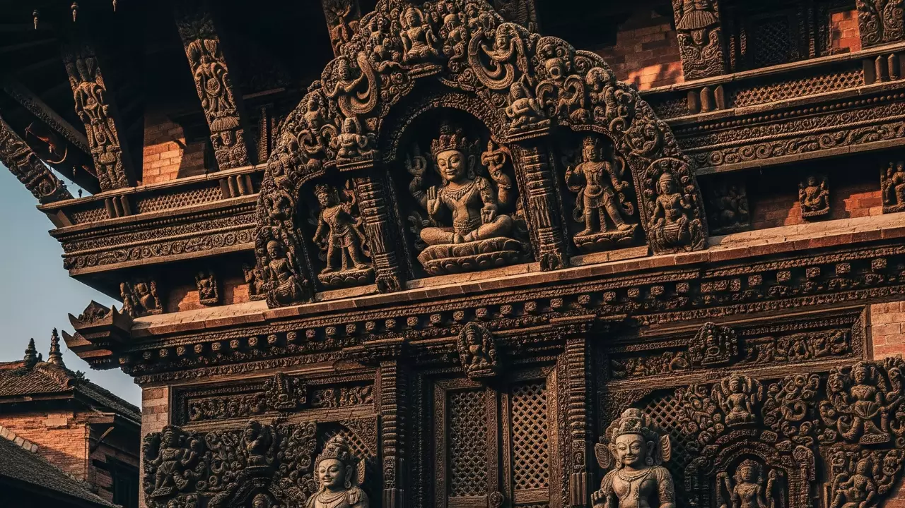
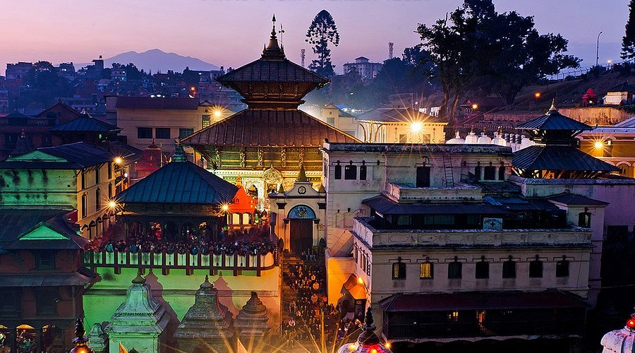
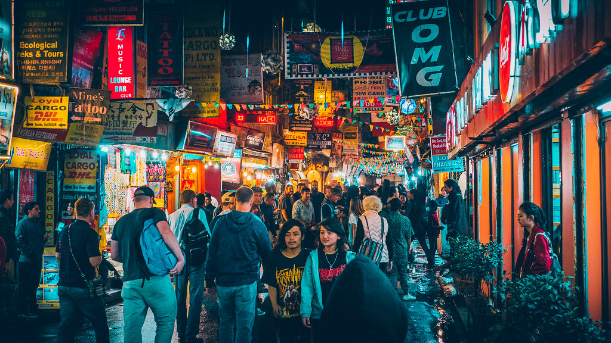
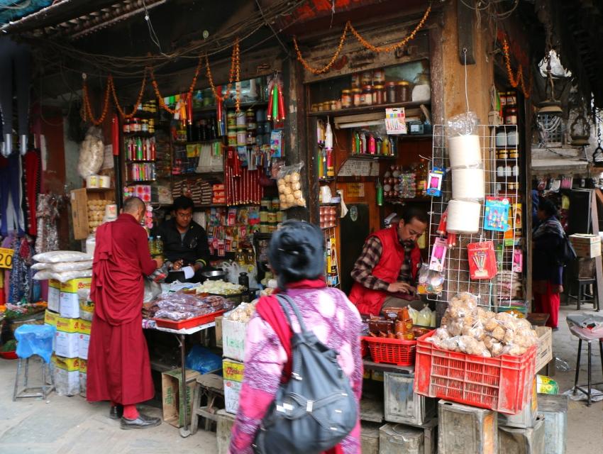

Kathmandu is not a city you visit—it's a city that visits you. It gets under your skin, into your dreams, and becomes part of your soul's geography. As a fourth-generation Newari who grew up in the shadow of Swayambhunath, I've watched this city transform while clinging fiercely to its 2,000-year-old soul. Kathmandu is chaos and prayer, dust and divinity, honking horns and chanting monks—all existing simultaneously in beautiful, bewildering harmony.

The Valley of Gods: Kathmandu's Eternal Story
According to legend, Kathmandu Valley was once a vast lake called Nagdaha. The Bodhisattva Manjushri cut through the surrounding hills with his sword of wisdom, draining the waters to reveal a fertile valley where civilization could flourish. Whether you believe the mythology or geology, the result is undeniable: a bowl-shaped valley at 1,400 meters, cradled by Himalayan foothills, that became one of Asia's most important cultural crossroads.
For centuries, Kathmandu was actually three separate kingdoms—Kathmandu, Patan, and Bhaktapur—each with its own durbar (palace) square, each ruled by Malla kings competing to build more magnificent temples and palaces. This royal rivalry gifted us with an unparalleled concentration of artistic and architectural treasures. Today, despite urbanization and earthquakes, these three medieval cities remain the beating heart of the valley, connected by the frenetic energy of modern Kathmandu.
"Kathmandu is not just a place; it's a state of being. It teaches you that chaos and sanctity can coexist, that ancient and modern aren't opposites but dance partners."
What visitors often miss is that Kathmandu isn't a museum city. It's living heritage. The same temples that attracted pilgrims in the 12th century are still active places of worship today. The woodcarvings you admire weren't created for tourists but for gods. The festivals that erupt in colorful chaos aren't reenactments but genuine expressions of faith that have continued uninterrupted for centuries. This authenticity—this living, breathing continuity—is what makes Kathmandu unique among the world's heritage cities.
Seven UNESCO Jewels: The World Heritage Sites
Kathmandu Durbar Square: The Royal Stage
The Heartbeat of Old Kathmandu: Not actually a square but a labyrinth of palaces, courtyards, and temples that served as the royal seat of the Malla and Shah kings. Despite earthquake damage, it remains astonishing. Key highlights include:
- Hanuman Dhoka Palace: Named after the monkey god Hanuman whose statue guards the entrance
- Kumari Ghar: Home of the Living Goddess—a prepubescent girl worshipped as the incarnation of Taleju
- Kal Bhairav: A massive 17th-century stone sculpture of Shiva's fierce manifestation
- Nine-Storey Palace (Basantapur): Originally built without nails, now housing souvenir shops
- Kasthamandap: The legendary wooden pavilion that gave Kathmandu its name (rebuilt after 2015)

The Living Goddess: Kumari
The Kumari is perhaps Kathmandu's most unique tradition. A young Newari girl from the Shakya caste is selected through rigorous tests (including spending a night in a room with 108 buffalo heads) to become the living embodiment of the goddess Taleju. She lives in the Kumari Ghar, appears at her window for devotees, and only leaves for festivals. When she menstruates, she returns to normal life and a new Kumari is chosen. This ancient tradition continues today, bridging Nepal's Hindu and Buddhist traditions.
Photography of the Kumari is strictly prohibited, but you can see her during designated viewing times. Remember: she's not a tourist attraction but a revered deity.
Patan Durbar Square: The City of Fine Arts
Just across the Bagmati River lies Patan (Lalitpur), known as the city of artists. While Kathmandu's durbar square feels royal and Bhaktapur's feels medieval, Patan's feels artistic. It's smaller but more refined, with highlights including:
- Patan Museum: Housed in the former royal palace, arguably South Asia's finest museum of Himalayan art
- Krishna Mandir: Unique stone temple built in Shikhara style (unlike typical pagoda style)
- Golden Temple (Hiranya Varna Mahavihar): A Buddhist monastery courtyard covered in golden repoussé work
- Mahabouddha Temple: Terracotta temple modeled after Bodhgaya's Mahabodhi Temple
Patan's backstreets are where the magic happens. Wander and you'll find hereditary workshops where families have been producing metal statues, thangka paintings, and woodcarvings for generations. The sound of hammers on metal is the city's soundtrack.
Bhaktapur Durbar Square: The Medieval Time Capsule
Best Preserved of the Three Cities: Bhaktapur (Bhadgaon) feels like walking into a 15th-century painting. Thanks to strict vehicle controls and preservation efforts, it maintains its medieval atmosphere. Must-see spots:
- 55-Window Palace: The masterpiece of Malla architecture with intricately carved windows
- Golden Gate: Gilded torana (gateway) considered the finest in Nepal
- Nyatapola Temple: Five-storey pagoda that survived earthquakes thanks to its ingenious design
- Pottery Square: Where potters still work with foot-driven wheels as their ancestors did
- Dattatreya Square: Home to Nepal's oldest monastery and peacock window
Living Culture: Festivals, Food, and Daily Rhythm
Festivals: When the Gods Come to Town
In Kathmandu, there's a festival almost every week. Some major ones:
- Indra Jatra (September): Eight-day festival honoring Indra, king of gods. The Kumari's chariot procession is the highlight
- Dashain (September/October): Nepal's biggest festival, 15 days celebrating victory of good over evil
- Tihar (October/November): Festival of lights, with days dedicated to crows, dogs, cows, and brothers
- Holi (March): Festival of colors—prepare to be drenched in colored powder and water
- Bisket Jatra (April): Bhaktapur's New Year celebration with towering chariots and tug-of-war
What's remarkable is that these aren't tourist shows. They're genuine religious events where the entire community participates. If your visit coincides with a festival, consider yourself blessed—you're witnessing living culture, not performance.

Newari Culture: The Valley's Original Inhabitants
The Newars are Kathmandu Valley's indigenous people, with their own language (Nepal Bhasa), script, and distinct urban culture. They're renowned as master craftsmen, traders, and custodians of the valley's heritage. Key aspects:
- Architecture: Multi-tiered pagoda temples, intricately carved wooden windows, brick and mud mortar construction
- Cuisine: Unique culinary tradition with dishes like bara (lentil pancake), yomari (steamed dumpling), and samay baji (ritual plate)
- Social Structure: Complex caste system with specific roles (goldsmiths, painters, farmers, etc.)
- Religion: Syncretic blend of Hinduism and Buddhism unique to Newars
- Festivals: Many festivals are specifically Newari in origin
Culinary Journey: From Street Food to Royal Feasts
Kathmandu's food scene tells its history: Newari feasts, Tibetan momos from refugee communities, Indian-inspired curries, and modern fusion. Must-try experiences:
- Newari Bhoj: Traditional feast with 20+ dishes served on leaf plates
- Momo Alley: In Patan, where steam-filled stalls serve perfect dumplings
- Thakali Kitchen: Hearty mountain food from the Thak Khola region
- Jhol Momo: Dumplings served in spicy broth—a Kathmandu innovation
- Street Food: Chatpate (spicy snack), panipuri, sel roti (rice doughnut)
Dining Like a Local
For authentic experiences: Bhanchha Ghar in Patan for Newari cuisine in a traditional setting. Krishnarpan at Dwarika's Hotel for a multi-course royal Nepali dinner. Roadhouse Cafe for wood-fired pizza that's become a Kathmandu institution. OR2K in Thamel for vegetarian Middle Eastern food popular with travelers. And don't miss trying chyang (fermented rice beer) or thwon (millet beer) in a local bhatti (tavern).
Remember: Street food is generally safe if it's cooked fresh in front of you. Stick to bottled water and avoid salads washed in tap water.
Architectural Marvels: Wood, Stone, and Devotion
The Pagoda: Nepal's Gift to Asia
Kathmandu's Global Architectural Legacy: The multi-tiered pagoda temple style originated in Nepal's Kathmandu Valley before spreading to Tibet, China, Korea, and Japan. Key features:
- Tiered Roofs: Usually odd numbers (3, 5, 7 tiers) symbolizing spiritual ascent
- Wooden Struts: Intricately carved with deities, mythical creatures, and erotic scenes
- Brick and Wood Construction: Flexible enough to withstand earthquakes
- Golden Finials: Gilt copper spire (gajur) often with umbrellas (chatra) representing royalty
The best examples are Nyatapola Temple (5-storey) in Bhaktapur, Taleju Temple (3-storey) in Kathmandu, and Kumbeshwor Temple (5-storey) in Patan. What's remarkable is that these aren't museum pieces—they're active temples where people worship daily.

Sacred Geometry: Stupas and Shikhara
Beyond pagodas, Kathmandu showcases other architectural forms:
- Stupas (Buddhist): Boudhanath and Swayambhunath represent the mandala universe
- Shikhara (North Indian style): Krishna Mandir in Patan shows Indian influence
- Newari Vihara: Buddhist monastery courtyards like Golden Temple in Patan
- Water Spouts: Stone dhunge dhara providing drinking water and ritual bathing sites
- Stone Sculptures: Guardian lions, nagas (serpents), and deities at temple entrances
Earthquake and Resilience: The 2015 Reconstruction
On April 25, 2015, a 7.8 magnitude earthquake devastated Kathmandu Valley. Centuries-old temples collapsed in minutes. The world watched as heritage seemed lost forever. But something remarkable happened:
- Traditional Knowledge: Newar craftsmen used ancient techniques alongside modern engineering
- Archaeological Precision: Every stone, brick, and carving was documented and reused when possible
- Community Effort: Locals protected fallen artifacts and participated in rebuilding
- International Support: UNESCO and various countries provided expertise and funding
Today, most major sites have been restored or are nearing completion. The reconstruction shows both the fragility of heritage and the resilience of cultural memory. It also sparked important conversations about balancing authenticity with safety, tradition with modernity.
Spiritual Crossroads: Hinduism, Buddhism, and Syncretism
Pashupatinath: Lord of Animals, Lord of Nepal
South Asia's Most Important Shiva Temple: Pashupatinath isn't just a temple—it's a microcosm of Hindu cosmology. Situated on the banks of the Bagmati River (considered a tributary of the Ganges), it's where life, death, and eternity converge.
Key experiences:
- Evening Aarti: Fire ceremony where priests offer lamps to Shiva as devotional songs fill the air
- Sadhus (Holy Men): Ascetics who have renounced worldly life, often available for photos (for a donation)
- Cremation Ghats: Open-air cremations along the river—observe respectfully from the opposite bank
- Guheshwori Temple: Dedicated to Shiva's consort, marking where Sati's yoni fell
- Monkey Colony: Hundreds of rhesus macaques considered descendants of Hanuman's army
Non-Hindus cannot enter the main temple but can view it from across the river. The complex is especially atmospheric at dawn or during evening aarti.

Boudhanath and Swayambhunath: Eyes That Watch Over the Valley
These two stupas are the centers of Tibetan Buddhism in Nepal:
- Boudhanath: One of the world's largest stupas, surrounded by monasteries and Tibetan refugee communities. The all-seeing eyes of Buddha watch in four directions. Circumambulate clockwise with pilgrims spinning prayer wheels.
- Swayambhunath: Perched on a hill, accessible by 365 steps (one for each day). Nicknamed "Monkey Temple" for its resident troops. The stupa is surrounded by shrines to both Hindu and Buddhist deities, perfect example of syncretism.
The Syncretic Soul of Kathmandu
What makes Kathmandu's spirituality unique is the seamless blending of Hinduism and Buddhism. You'll find Hindu deities in Buddhist stupas and Buddhist symbols in Hindu temples. Many families practice both. This syncretism dates back to the Licchavi period (400-750 CE) and continues today. At festivals like Buddha Jayanti, both communities celebrate together. This religious harmony—while not without tensions—is one of Kathmandu's great achievements.
When visiting: Walk clockwise around Buddhist stupas, remove shoes before entering Hindu temple sanctums, and dress modestly. Photography is usually allowed but ask before photographing people in prayer.
Hidden Spiritual Sites Beyond the Guidebooks
Beyond the famous sites, Kathmandu has countless smaller gems:
- White Machhendranath Temple (Janabahal): In a courtyard hidden in the old city
- Itum Bahal: One of Kathmandu's largest Buddhist courtyards, surprisingly peaceful
- Narayanhiti Palace Museum: Former royal palace where the 2001 royal massacre occurred
- Garden of Dreams: Neo-classical garden built in 1920, perfect escape from chaos
- Kopan Monastery: Tibetan Buddhist monastery offering courses and stunning valley views
Modern Kathmandu: Chaos, Creativity, and Contradictions
Thamel: Traveler's Ghetto and Cultural Melting Pot
Love it or hate it, Thamel is Kathmandu's tourist epicenter. What began as a quiet neighborhood with a few traveler lodges in the 1960s has become a frenetic maze of shops, restaurants, and hotels. Beyond the trekking gear and singing bowls lies a fascinating subculture:
- Historical Layers: Some buildings date back to Rana period (1846-1951)
- Musical Heritage: Jazz clubs, live music venues, and recording studios
- Culinary Innovation: Where momo meets pizza and dal bhat gets a gourmet makeover
- Underground Arts: Graffiti, indie music, and experimental theater in back alleys
- Social Hub: Where climbers, pilgrims, volunteers, and diplomats cross paths
Yes, it's touristy. Yes, you'll be offered hashish and tiger balm. But look deeper—behind the neon signs are family businesses that have operated for generations, artists creating in tiny studios, and a community that has welcomed travelers for half a century.

Urban Innovations
Modern Kathmandu vibes:
- Heritage Conservation: Organizations like Kathmandu Valley Preservation Trust
- Green Initiatives: Electric vehicles, rooftop gardens, waste management projects
- Tech Startups: Young entrepreneurs solving local problems
- Arts Renaissance: Galleries, festivals, and public art projects
- Sustainable Tourism: Community homestays, ethical trekking, cultural immersion
Day Trips: Escaping the Urban Intensity
When the city overwhelms, escape is nearby:
- Nagarkot (32km): Mountain resort with sunrise views of Everest on clear days
- Dhulikhel (30km): Newari town with Himalayan views and ancient temples
- Kakani (25km): Peaceful hill station with trout fishing and strawberry farms
- Pharping (19km): Sacred site with caves where Padmasambhava meditated
- Chandragiri Hills (7km): Cable car to hilltop with views and temple
- Godavari (10km): Botanical garden at the base of Phulchoki mountain
The Essential Kathmandu Travel Guide
When to Visit: Seasons and Festivals
Kathmandu has distinct seasons:
- Autumn (Sep-Nov): Peak season. Clear skies, perfect temperature, major festivals
- Winter (Dec-Feb): Cold mornings/evenings, sunny days, fewer crowds
- Spring (Mar-May): Warming up, rhododendrons bloom, pre-monsoon haze
- Monsoon (Jun-Aug): Heavy rain, lush greenery, lower prices, fewer tourists
Festival Timing: Check lunar calendar. Dashain (Sep/Oct), Tihar (Oct/Nov), Holi (Mar), Buddha Jayanti (May), and Indra Jatra (Sep) are spectacular but mean crowded sites and booked accommodations.
Packing for Kathmandu
- Clothing: Layers! Days can be warm, nights cold. Modest clothing for temples
- Footwear: Comfortable walking shoes plus sandals for temple shoe removal
- Health: Mask for pollution/dust, hand sanitizer, basic medicines
- Essentials: Sunscreen, sunglasses, hat, water purification method
- Photography: Extra batteries, memory cards, lightweight tripod for interiors
- Documents: Copies of passport, insurance, emergency contacts
Electrical: 220V, Type C/D/M sockets. Power cuts still occur—power bank recommended.
Getting Around: Survival Tips
Kathmandu's traffic is legendary. Options:
- Taxi: Negotiate price before entering. Use meter if available (rare)
- Rickshaw: For short distances in Thamel or old city areas
- Walking: Best for exploring old cities but watch for uneven surfaces and traffic
- Private Car with Driver: Recommended for day trips and airport transfers
- Local Bus: Cheap but confusing routes and crowded
- Motorcycle Taxi: Fastest way through traffic but risky
Pro tip: Google Maps works reasonably well. Traffic peaks 8-10 AM and 5-7 PM. Allow extra time.
Accommodation: From Heritage to Hipster
Options for every budget:
- Heritage Hotels: Dwarika's Hotel, Kathmandu Guest House (original wing), Hotel Vajra
- Boutique: Dalai-La Boutique Hotel, Traditional Comfort Hotel
- Luxury: Hyatt Regency, Soaltee Crowne Plaza, Shangri-La
- Mid-range: Hotel Tibet, International Guest House, Hotel Silver Home
- Budget: Numerous options in Thamel, mostly basic but clean
- Alternative: Monastery stays (Kopan), homestays in Patan/Bhaktapur
Money Matters: Costs and Currency
Nepal is generally affordable for Western travelers:
- Currency: Nepalese Rupee (NPR). Approximately 130 NPR = 1 USD
- ATMs: Widely available but charge 500 NPR fee per transaction
- Credit Cards: Accepted at larger hotels/restaurants but cash preferred
- Bargaining: Expected in markets, not in fixed-price shops or restaurants
- Tipping: Not mandatory but appreciated. 10% in restaurants if service not included

Health and Safety
Health:
- Drink bottled or purified water only
- Street food is generally safe if cooked fresh
- Altitude not an issue in Kathmandu (1,400m)
- Pollution can affect those with respiratory issues
- Travel insurance with evacuation coverage strongly recommended
Safety:
- Kathmandu is generally safe, but take normal precautions
- Watch for pickpockets in crowded areas
- Be cautious of "hashish sellers" and fake "guides"
- Earthquake safety: Know exit routes, avoid top floors during quakes
- Emergency numbers: Police 100, Ambulance 102
Cultural Etiquette: Do's and Don'ts
- DO: Remove shoes before entering homes and temple sanctums
- DO: Walk clockwise around stupas and temples
- DO: Dress modestly, especially women (covered shoulders/knees)
- DON'T: Point feet at people or sacred objects
- DON'T: Touch offerings or religious items without permission
- DON'T: Public displays of affection
- DON'T: Phototype people without asking, especially during prayer
- GREETING: "Namaste" with hands pressed together is always appropriate
Beyond the Checklist: How to Really Experience Kathmandu
Skip the checklist mentality. Instead:
- Get Lost: Wander without map in old city alleys
- Learn Something: Take a cooking class, thangka painting lesson, or language hour
- Connect: Talk to shopkeepers, artisans, fellow travelers at tea shops
- Observe Rituals: Sit quietly at a temple during puja, join evening aarti
- Support Local: Buy directly from artisans, eat at family restaurants
- Give Back: Volunteer at a school, orphanage, or animal rescue
- Slow Down: Spend a whole day in just one neighborhood
- Return: Visit the same place at different times of day
The Kathmandu Effect: Why This City Stays With You
People come to Kathmandu for the temples but stay for the transformation. This city has a way of breaking you open—the chaos strips away pretensions, the spirituality asks difficult questions, the poverty challenges privilege, the beauty heals in unexpected ways.
I've seen it countless times: travelers arrive overwhelmed, complaining about the noise, the dust, the hassle. Then something shifts. They discover a hidden courtyard where children are playing. They share a meal with a family. They sit silently as monks chant at dawn. And suddenly, the chaos becomes rhythm, the dust becomes gold in sunset light, the hassle becomes human connection.

Kathmandu is not an easy city. It will frustrate you, overwhelm you, break your heart with its poverty and pollution. But it will also show you resilience in the face of earthquakes, devotion in the midst of chaos, creativity born from limitation, and joy that doesn't depend on material wealth.
The city has survived invasions, earthquakes, political upheavals, and rapid modernization. Yet through it all, the morning puja bells still ring, the prayer wheels still spin, the kumaris still gaze from their windows, and the craftsmen still carve wood as their ancestors did. This continuity is Kathmandu's true miracle.
So come to Kathmandu. See the UNESCO sites, but also see the woman making momos on the sidewalk, the old man playing chess in a sunlit courtyard, the children flying kites from temple roofs. Taste not just the dal bhat but the complexity of a city that is ancient and modern, sacred and profane, broken and beautiful.
Come with an open heart, patience for the inevitable frustrations, and eyes willing to see beyond the surface. Kathmandu will meet you halfway. It might even change you. And you'll carry a piece of it with you forever—the smell of incense and diesel, the sound of temple bells and motorbikes, the memory of eyes that have seen centuries watching over a city that somehow, miraculously, keeps its soul.
As we say in Nepal: "Swagatam" - welcome. May your journey be deep, your experiences meaningful, and may Kathmandu find its way into your heart as it has into mine.